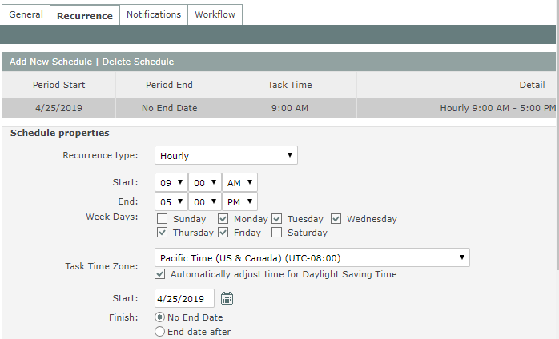
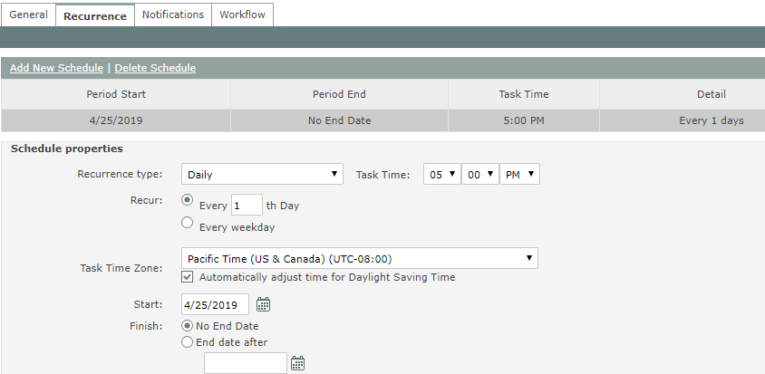
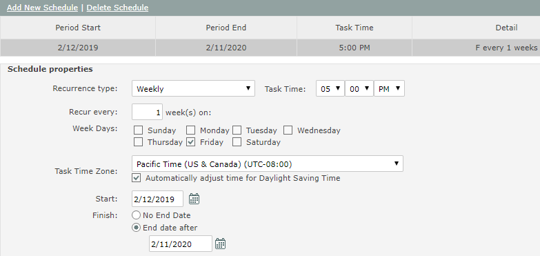
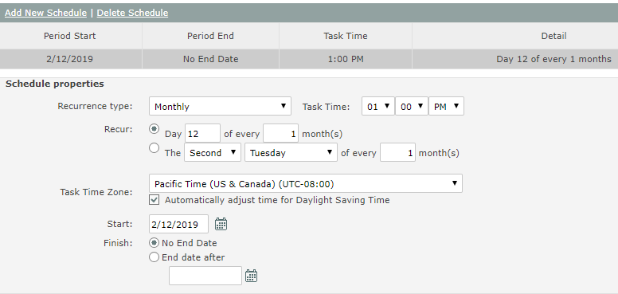
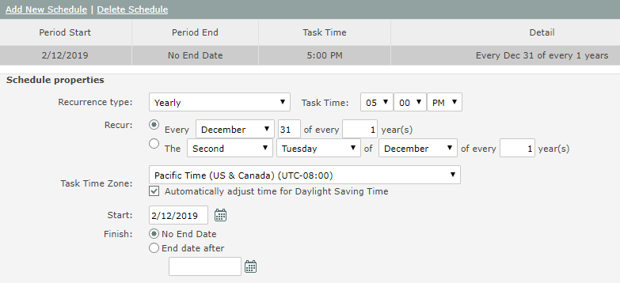
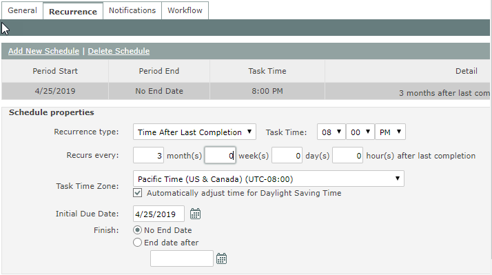

The fields on the Add Recurrence and Edit Recurrence worksheets correspond to the fields in the Recurrence tab of the Task properties in the main application.
To add recurrence schedules, use one row for each task recurrence schedule to add. The following fields are required on the Add Recurrence sheet:
To edit an existing task recurrence on the Edit Recurrence sheet, you must identify the recurrence schedule to edit, as well. These three fields are used to identify the recurrence schedule to edit:
Note: When you view tasks in Task Manager, the due date/time are shown in the time zone of your own profile. If the Task Time Zone is different, you may use the wrong date/time for identification, which will cause an error when attempting the bulk tools upload. To avoid confusion, you can temporarily set your own time zone to the same time zone as the tasks you are editing.
To delete a recurrence schedule, on the Edit Recurrence sheet enter the identifying fields A-H, then enter <clear> in existing schedule fields.
The following properties (columns AR-AU or AQ-AT depending on the worksheet), apply to ALL recurrence types:
Task Time Zone: Required. Note that Task Time Zone may be different than Assignee User Time Zone. Field may not be edited if there are existing completed task instances. All recurrences must use the same Task Time Zone; the time zone on the last recurrence will overwrite any previous values, if different. For time zone formats, see Time Zones.
Task Start Date: Required on Add Recurrence sheet. On the Edit Recurrence sheet, use this field to edit the Period Start Date as indicated in column G, or leave blank for unchanged.
Finish: End Date After: Set end date, or leave blank for none; use <clear> to clear an existing end date. End date must be later than current date. If you are trying to end date a task recurrence schedule that has completed tasks, be sure to clear all fields other than the required fields (columns A-G, and AT).
Task Time: Required except for Hourly recurrence type, where task time is determined by daily Start and End times. Time is in Task Time Zone.
Note: The Due Date and Time fields in cols C and D (ID fields) are specified in the existing Task's Time Zone. This may be different than the User's Time Zone (specified in the user profile). User will see due date as UTC ± Task Due DateTime. When editing a task, you can change the Task Time Zone to match User Time Zone, if desired, as long as there are no completed tasks.
The recurrence detail fields depend on the Recurrence Type, as identified in column G on the Add Recurrence sheet or column H on the Edit Recurrence sheet.
Use one row for each task recurrence schedule. So, for example, if a task has two recurrence schedules and you want to edit both of them, you will have two rows. (Note: The task must have different Period Start Dates for each recurrence schedule in order to uniquely identify them.) Recurrence type is directly related to the editable fields on the main app UI. Screenshots are provided below as a guide.
Hourly
Start Time: Beginning of daily task schedule (first instance each day)
End Time: End of daily task schedule
Weekdays: Sun | Mon | Tues | Wed | Thu | Fri | Sat: Yes/No – indicates whether task schedule is to occur on that day

Daily
Only one of these two properties may be valid:
Every (N) Days: Number of days (recurrence interval)
Every weekday: Yes/No (Must be No if Every (N) Days has value)

Weekly
Every (N) Weeks: Number of weeks (recurrence interval)
Weekdays: Sun | Mon | Tues | Wed | Thu | Fri | Sat: Yes/No– indicates whether task schedule is to occur on that day

Monthly
There are two options, each with its own set of related fields. Only one set of fields can be valid.
Option 1: Task occurs every (n) months on specific calendar day.
Day (N): Calendar day (1-31)
Every (N) Months: Number of months (recurrence interval)
Option 2: Task occurs every (n) months on first, second, third, fourth or last weekday in month.
The (1st-4th or Last): First | Second | Third | Fourth | Last
Day: day | weekday | weekend day | Sunday | Monday | Tuesday | Thursday | Friday | Saturday
Of Every (N) Month(s): Number of months (recurrence interval

Yearly
There are two options, each with its own set of related fields. Only one set of fields can be valid.
Option 1: Task occurs every (n) years on specific calendar day.
Name of month:
Day of month:
Every (N) Years:
Option 2: Task occurs every (n) years on the first, second, third, fourth or last weekday in specific month.
The (1st-4th or Last):
Weekday:
Month:
Every (N) Years:

Time After Last Completion
Specify recurrence interval after the last task completion, in the format:
Recurs every N month(s) N week(s) N day(s) N hour(s) after last completion
A number (0 or positive whole number) is required for each field.
Months: N month(s)
Weeks: N week(s)
Days: N days(s)
Hours: N hour(s)
